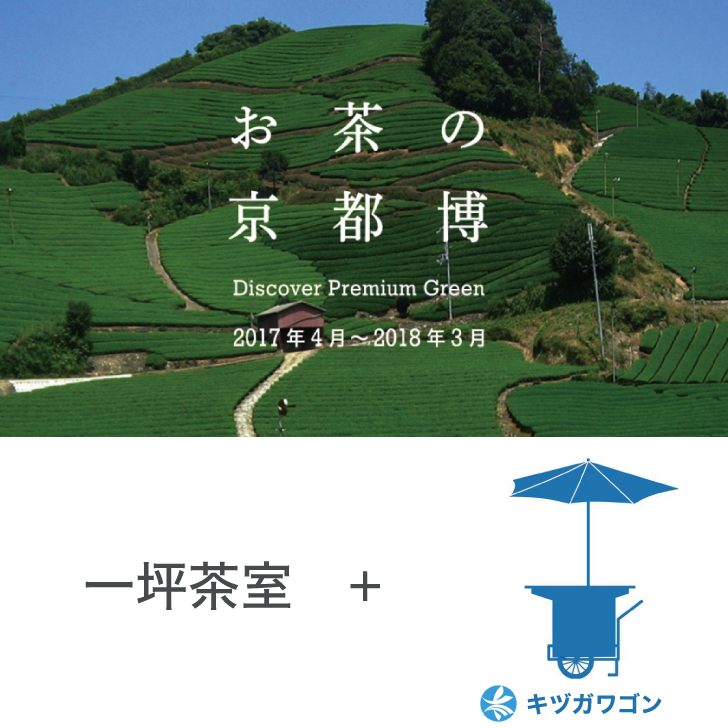

朧庵
木津川市×成安造形大学 一坪茶室プロジェクト
2017年4月から京都で開催されていた「お茶の京都博」というイベントで展示する「一坪茶室」を、７人の学生でチームを組み制作を行ったグループ制作。自分がまとめ役としてプロジェクトを進めていき、市役所の方達にプレゼンなども行った。
この茶室は「実際に人が中に入る」ための展示作品であったため、模型とは違う実物大を作る難しさや、過重の計算・耐久性など、多くのことを学ぶことができ、その後の制作に生かすことができた。
木津川市×成安造形大学
一坪茶室をデザインしてほしい、と木津川市役所からお話をいただき、大学でチームを組み制作を行った。市役所の方からは「木津川市がデザインした『キヅガワゴン』をメインに用いた茶室をデザインしてほしい」という要望があり、キヅガワゴンを活かした茶室をデザインすることになった。
ワゴンの「パラソル」をデザインする
キヅガワゴンを茶室の主役にしつつ、今後のキヅガワゴンへのアプローチの提案として、「キヅガワゴンのパラソルをデザインする」というコンセプトでプレゼンを行い、制作を進めることとなった。
内と外の境界を曖昧にする茶室
「パラソル」部分は一坪でも閉塞感を感じないように「木漏れ日」をイメージしたデザインに。内側からは外が見え、外側からは中の様子が直接的に見えないデザインをヨシで制作。
展示場所である瓶原（みかのはら）や宇治の美しい自然を背景としながら、木津川・宇治川とゆかりの深いヨシによるおぼろげな輪郭をもつ茶室は、木陰の中での野点のように心を川に解き放ってくれる。